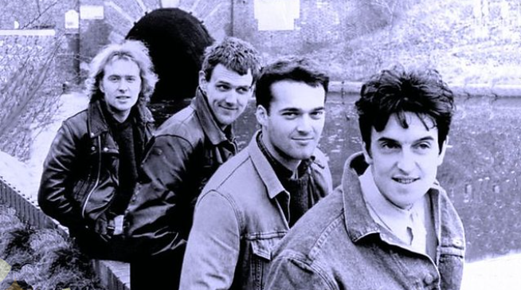

The Stars of Heaven var ett irländskt band från Dublin som bildades 1983. Gruppen bestod av Stephen Ryan, Stan Erraught, Peter O’Sullivan och Bernard Walsh. De släppte albumen Sacred Heart Hotel och Speak Slowly innan bandet upplöstes omkring 1990.